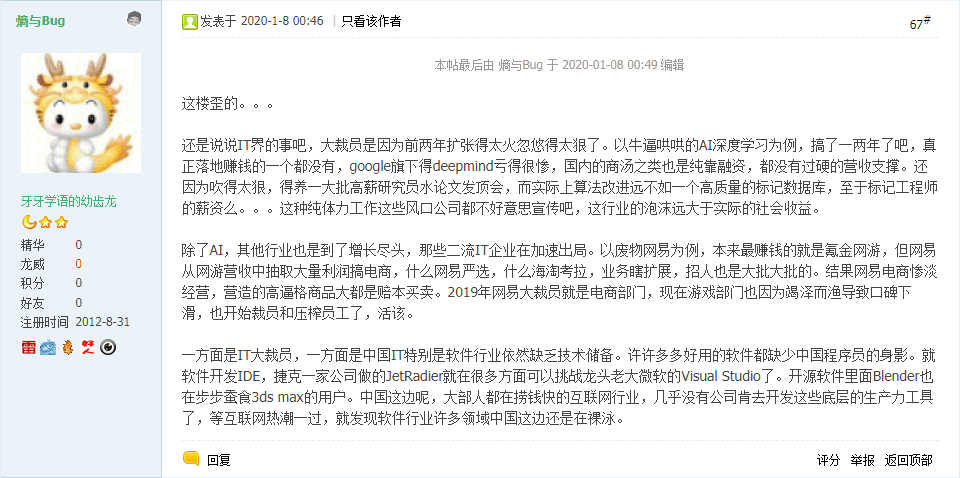
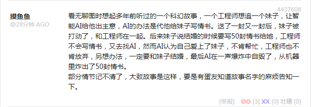
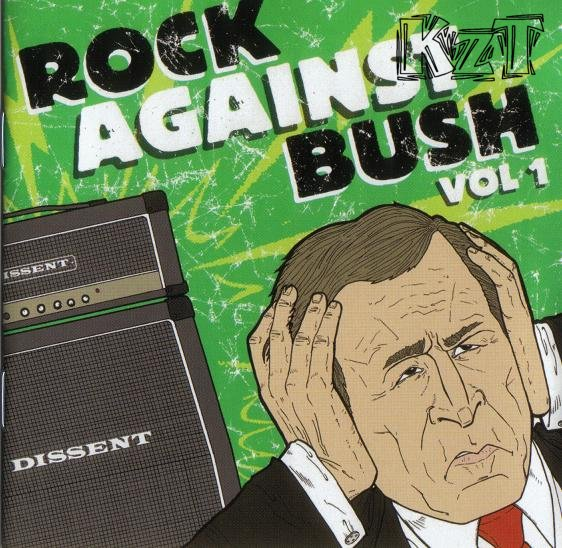
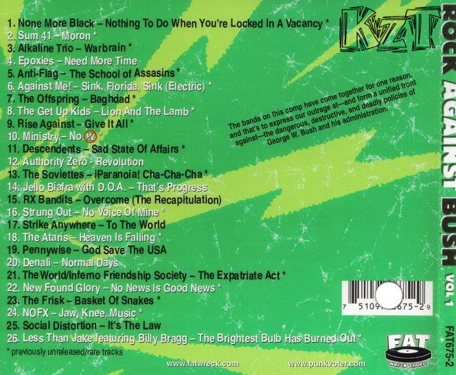
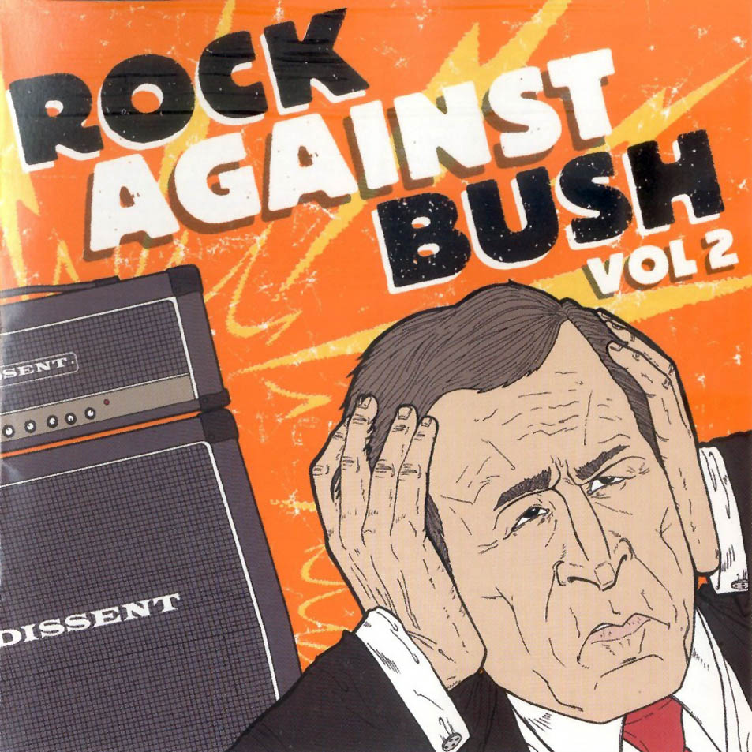
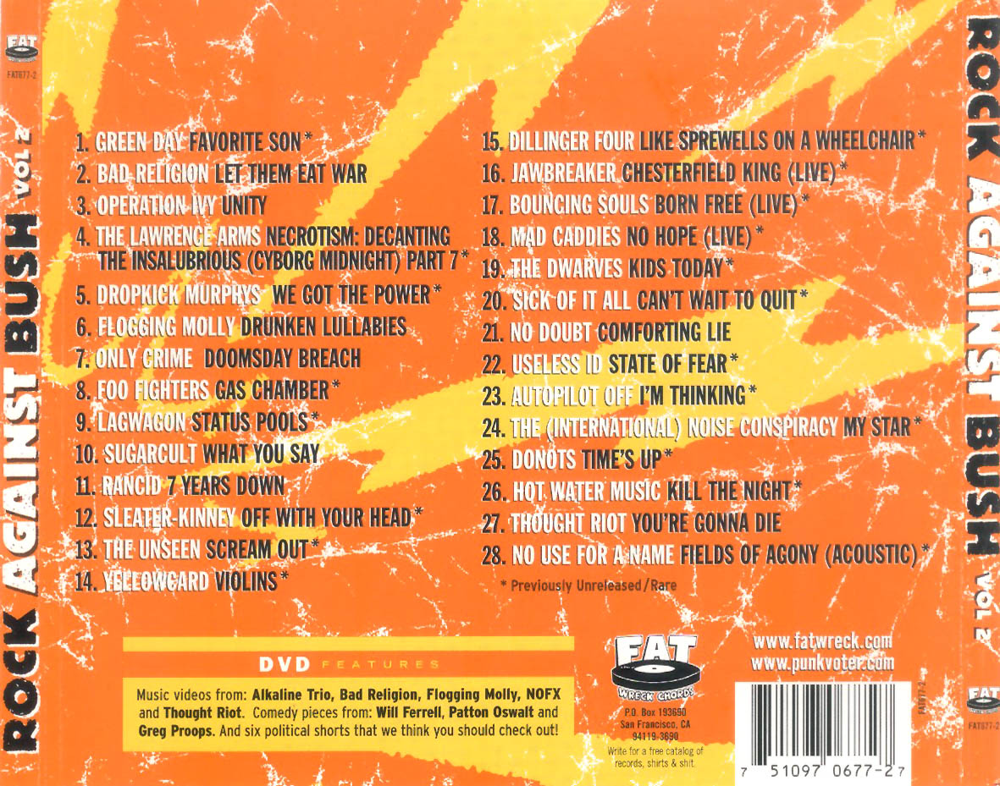

素材
国际一流和谐宜居之都「高学历精英社交圈」 1月5日，伊朗首次在库姆贾姆卡兰清真寺圣洁圆顶上展开象征复仇的红旗，预示了什么走向？
1月8日美驻伊拉克空军基地遭导弹轰炸，伊朗证实发动袭击，会对国际局势产生什么影响？
1月8日，一架波音737客机在伊朗起飞后坠毁，事故原因是什么？目前救援情况如何？
1月9日特朗普就伊朗空袭美军基地的讲话有哪些信息点？
1月9日特朗普宣布对伊朗实施新经济制裁，将对伊朗及国际经济局势产生哪些影响？
国际化大都市「华语第一精日论坛」 为什么文青这么讨厌“宏大叙事”？
苏莱曼尼送葬队伍发生踩踏事故，3.5×101 死4.8×101 伤
广州人大常委会决议：举全市之力支持深圳建设先行示范区
之江临安「原创文学论坛」

人工智障现状
这算业内爆料吧？
之前在《〈设定集〉注释〔６２〕》 当中说过了，因为我中华兲朝上国人力便宜，所以「有多少人工就有多少智能」的席卷全球的惊天骗局才会外包过来，然后，投资者带着「人工处理的智能数据」跑路，兲朝留下一地鸡毛。
九省通衢の煎蛋

人工智障真相
更是不打自招，压根就没有什么「工程师」，只不过是从小衣来伸手饭来张口没拿过比碗重的东西没下过比澡盆深的水上炕认得碧池下炕认得鞋的废柴人渣罢了，非要吹捧成从小比人聪明还比人努力的神童贵种大少爷，所有成果全靠抓壮丁尤其是诈骗，明明人肉硬编码搞定的项目，指使灌水机吹捧为人工智障突破了技术奇点。
以前举过例子了，谷歌为了对抗垃圾邮件灌水机把注册帐号的验证码弄得极为奇葩，但还是防不胜防，后来发现注册的时间段正好是天竺的工作时间，再后来就转移到菲律宾工作时间，那些「一串字母数字胡乱混合」的帐号全是人肉注册的，就为了在繁荣的互联网上到处追着别人喷「傻哔绿人反汉贱种中国通」什么的。
前言
在《党国栋梁 》当中已经引用了《穿越回咸丰末年关中地主家咋办》的解读：
Tacitus 2014-07-18 22:01:24
一个很简单的比喻，魔兽争霸三开头的剧情：先知到处找人说少数民族入侵在即赶紧拉家带口跑路吧，到头来只有头脑简单的个别兽人带走一个部落而已。
现在假设你重生到咸丰末年关中平原上一个家底殷实的地主家族当少爷，明知道立刻就是绿人作乱自己全家死光光，你还能怎么办？
苦口婆心说服老爹和家老根本不可能，多半会被关起来勒令读书；以游学名义跑路只能带走几个长随，最多一小部分盘缠；留下来扩军备战会提前被官老爷抄家灭族。
就算你逃得掉，就算尽可能带走了细软，到了外地不过是没有背景的肥羊而已。无论晋商钱庄、徽商票号还是洋人的银行，没有势力背书的大额存折就是废纸。
等到左公平乱之后回家呢，发现家产已经变成无主之地分封给功臣了，你作为苦主后人一定是冒充的，多半剐了以警告觊觎的小人顺便安定功臣人心。
就是这样一个局面，除了悲愤的大骂“是谁特么拼命扶植少数民族像兔子一样蔓延的吖”之外毫无办法，并且你明明知道罪魁祸首是谁，还是只能在粗话中反问“是谁”。
当时忘了附上之江临安 「原创文学论坛」发言的链接，也没截图，现在找不到了，估计很快《浙江日报》就会改名为《之江新报》并于全球发行。
所以，之前「江陵样板间」出场，双簧之一的「左公」已经准备好了，而「东突大唐太祖景皇帝」陇西成纪 （今甘肃秦安县）人李虎 在注释中作为哑谜的谜底出场，双簧之一的白彦虎 也准备好了。
按照「歌革 与玛各 战争」的剧本，第六次中东战争即将爆发，三洲通衢旧大户们会被「反派」杀干净，等到「雅威 代言人」收复失地之后，在「无主之地」上重新分封一堆新贵，苦主如果惦记着「依法治国」拿回家产，美帝灯塔国就会运用「唯物主义证据」判定为冒名顶替然后斩草除根永绝后患。
背景音乐：崔健 《红旗下的蛋 》，同名专辑，1994
突然的开放
如果觉得这些蕴涵着充沛的政治和意识形态内容，但是并没有引领激烈的政治和意识形态斗争新动向，是我中华兲朝上国の国情所导致，可以对比美帝灯塔国肯尼迪 大统领遇刺之后的乐坛，比如名曲《寂静之声Sound of Silence 》。
如果说那也是美帝灯塔国の国情，尤其是如日中天时期一力降十会，朕即国家我就是大局你们要顾全大局，可以参考指着大统领鼻子痛骂的专辑《摇滚对抗布什Rock Against Bush 》：
什么是朋克？是吵吵闹闹的小儿科把戏！？还是快速简单的三和弦！？亦或是粗糙幼稚的技术、空洞虚假的口号！？那你就大错特错了。如果你看看美国老牌朋克乐队NOFX的主唱Fat Mike(现在的“Me First And The Gimme Gimmes”乐队的贝司手)独立厂牌Fat Wreck Chords的老板在今年的所作所为，你就能明白“朋克”的真正含义了。
2000年的美国总统大选中，布什以极其微弱的优势赢得了选举的胜利，这一出人意料的结果让始终反对布什上任的Fat Mike伤透了心。他很不甘心的说：“自从2000年选举结束后，我一直很沮丧。我觉得我应该用我的影响力来揭露这次选举中的欺诈行为。”不久之后，说到做到的Fat Mike就创建了一个名为“朋克投票者”的反布什网站。时隔四年，今年又到了总统大选的年份，作为美国朋克音乐领域一直都颇有声望、并带有强烈政治立场的人物，Fat Mike在 “朋克投票者”网站上继续鼓励青少年们积极的参与到反布什的行动中来。
而2004年4月，Fat Mike又有惊人之举，他集结了包括Sum41、Offspring、New Found Glory在内的当红的朋克团体，加上一些小有名气的朋克乐队，每支乐队收录一首歌，一共28首作品，在他所创立的专门出品朋克音乐的独立厂牌Fat Wreck Chords旗下，发表了一张名为《Rock Against Bush,Vol 1》（摇滚对抗布什，第1集）的合集。正如这张唱片的名字一样，Fat Mike已经很鲜明的摆出自己的政治立场，他表示他想要用这些乐队的影响力来提醒大家，要时刻关注布什的种种政策所导致的战乱、恐慌、环境破坏、经济衰退等问题，继而希望大家以自己的选票来否定布什的表现，直到把他驱逐出白宫。由于朋克音乐的听众群主要是20岁左右的学生族，于是在这张唱片发表不久，Fat Mike更是组织了部分参与合集的乐队，在校园立举行了“摇滚对抗布什”巡演，并大力宣传“朋克投票者”网站。

摇滚对抗布什 第一辑封面

摇滚对抗布什 第一辑封底

摇滚对抗布什 第二辑封面

摇滚对抗布什 第二辑封底
毕竟嘛，「元老院和罗马人民」都是两党制，也是美帝灯塔国の国情，武德充沛的党国栋梁到处刷屏嘲讽，把高学历精英社交圈当中「念两句诗」打哑谜的话语体系当中「嗟叹之不足故咏歌之」的表现，说是「无能狂怒」也可以。
后记
就看市面上的色目情报，三洲通衢这次就这么算了，所以本篇按照后备方案及时收尾。
简单说，类比我中华兲朝上国「太平天国」和「同治回乱」的先后顺序，影射到三洲通衢「伊斯兰国」和预定的「石叶帝国」。前者已经打完了，屡试不第的「左公」就是在那时候出场的，后者还没准备好，夜壶一号已经退场了。
也可以参考南直隶「远东第一体育论坛」的色目竞技爱好者提供的情报，上世纪八九十年代左敦 如日中天的时候，苏修武德已经不够充沛了，否则教宗多死几个就赶上进度了。现在嘛，教宗预言剧本终于到了最后一幕，再看约旦 武德是否已经准备好了，北边被夜壶巴格达迪 打烂了，等南边再被啥夜壶打烂，这根尊贵的鸡巴就可以雄起了也。
参考历史也知道，主角郭春海 的头疼永远也好不了，等柴禾妞 对工作比较上手之后，还会在各种关键时刻小毛病改变历史走向。顺便，「比翼鸟」和「比目鱼」都是传说生物，两个半残拼起来才能动弹，而「连理枝」则不是。